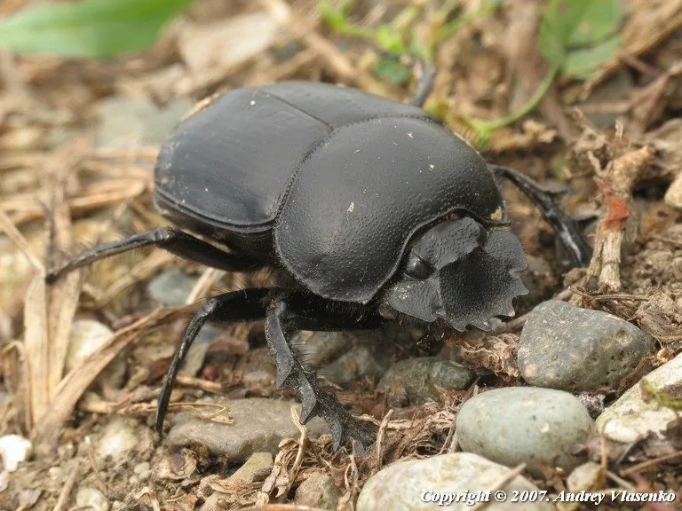

昆虫 · 动物界
神圣蜣螂 Scarabaeus sacer

古埃及人奉为圣甲虫的蜣螂，把动物粪便滚成球运走取食或繁殖，靠偏振光导航，具有重要的生态价值。
- 分类
- 门节肢动物门纲昆虫纲目鞘翅目科金龟科属蜣螂属
- 栖息环境
- 草原、牧场和荒漠边缘，随牲畜粪便分布
- 地理分布
- 欧洲南部、北非和中亚的地中海气候区
- 保护级别
- 暂无评估
物种志
神圣蜣螂成虫体长约 2–3 cm，体黑色，体形圆厚，前足胫节宽扁带齿，适合掘粪和推球；鞘翅光滑，触角末端的鳃片可感知气味。
它以动物粪便为食，会把粪便滚成球推到远处埋入地下，既取食又为幼虫储备食物；雌虫在粪球中产卵，幼虫孵化后以粪球为食。神圣蜣螂能利用太阳、月光和偏振光导航，在夜间也能保持直线行进，是导航研究中的经典昆虫。它分布在欧洲南部、北非和中亚的地中海气候区。古埃及人把蜣螂滚粪球与太阳运行联系起来，视其为太阳神凯布利的象征，称为圣甲虫，其形象大量出现在印章、护身符和壁画中。在草原上，它们是清理牲畜粪便的重要力量。
形态与习性
- 食性取食动物粪便，并把粪球埋入地下储存
- 体长约 2–3 cm
- 导航利用太阳、月光和偏振光保持直线行进
- 繁殖雌虫在粪球中产卵，幼虫以粪球为食
- 生态作用清理粪便、促进养分循环和土壤通气
- 文化古埃及视为圣甲虫，象征太阳神凯布利
趣味知识
- 古埃及的圣甲虫护身符，原型就是这种滚粪球的蜣螂。
- 神圣蜣螂能利用偏振光导航，即使在夜里也能走直线。
- 它们把粪便埋进土里，帮助养分循环，是草原上的清道夫。